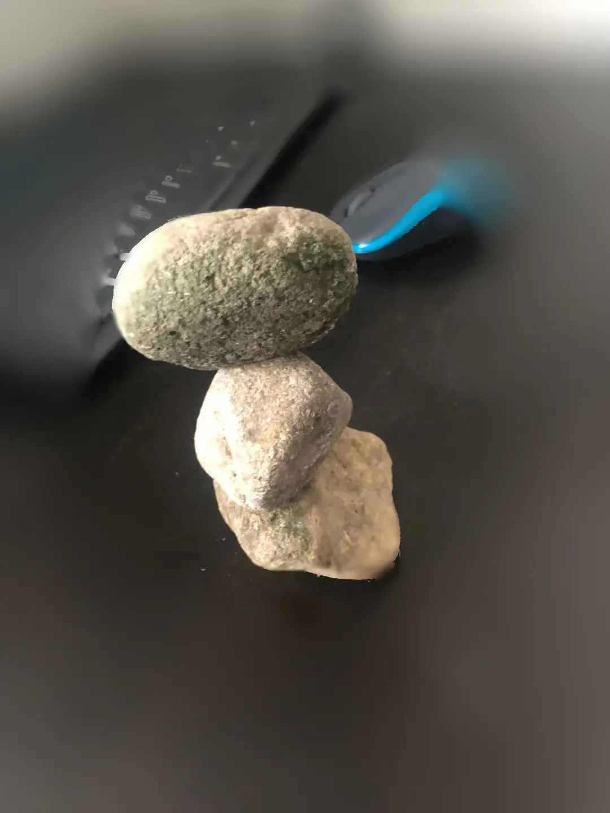

用高质量的内容和付费广告快速获得网站排名
Written by sing in 境外电商SEO on 周日 21 八月 2022.
用高质量内容和付费广告相互成就网站排名
用高质量内容和付费广告相互成就网站排名

1，叠石头并不容易，需要你集中注意力去做，当你集中注意力在另外一件事的时候，你就不会 …
SEO应该被牢牢地视为一种营销功能。那是因为 SEO 可能是最好的营销形式。
SEO有技术方面的问题吗？绝对地。但是所有的 SEO
都是技术性的吗？绝对不。差远了。
SEO不是广告。大多数公司在其整体营 …
Ajahn_Chah_The_World_of_Meditation 本小册原是编者节录自阿姜查作品中的修行要领，作为随身携带精进禅思之用，因有同修鼓励出版 …
点击photoshop右侧图层部分锁按钮，使之 …
本书译自帕奥禅师于两次禅修营期间的英话开示与问答，时间在西元二千年肏二千零一年之间
今天我要为大家介绍修 …
One day the Buddha held a Buddha bead in his hand and asked the five heavenly kings, "What color is this bead?" The five heavenly kings said that there are various colors such as green, red, yellow, etc. The Buddha hid the beads in his sleeves, raised his hand and …
let me Talk是目前能找到免费的语音交流软件，多语言支持，有安卓和苹果平台软件，但国内安卓平台下不到，故此提供安卓平台下载，并同时包含了google TTS语音合成，也支持其 …
为障碍人士设计的握勺器，可以3D打印，我用的是FDM打印机，文件来自https://www.thingiverse.com/，如果找不到at我，我找。
具有防抖动、可夹持铅笔、勺子功能。
 本 …
本 …
内容策略的解剖元素是什么？
就像营销章鱼一样，一个好的营销策略有八个重要的附属物。
让我们按照您应该创建它们的 …